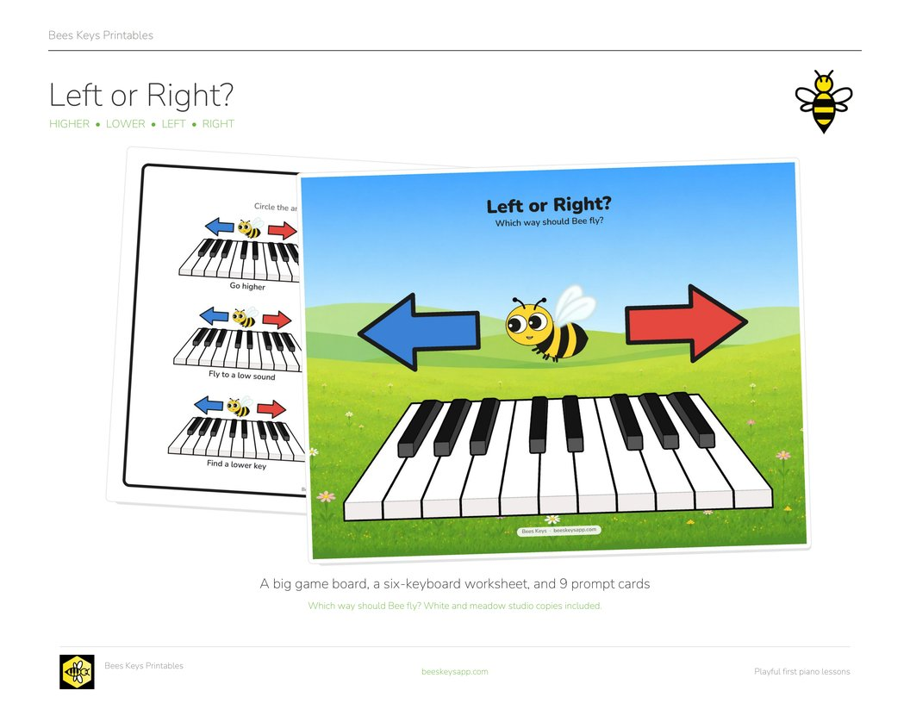
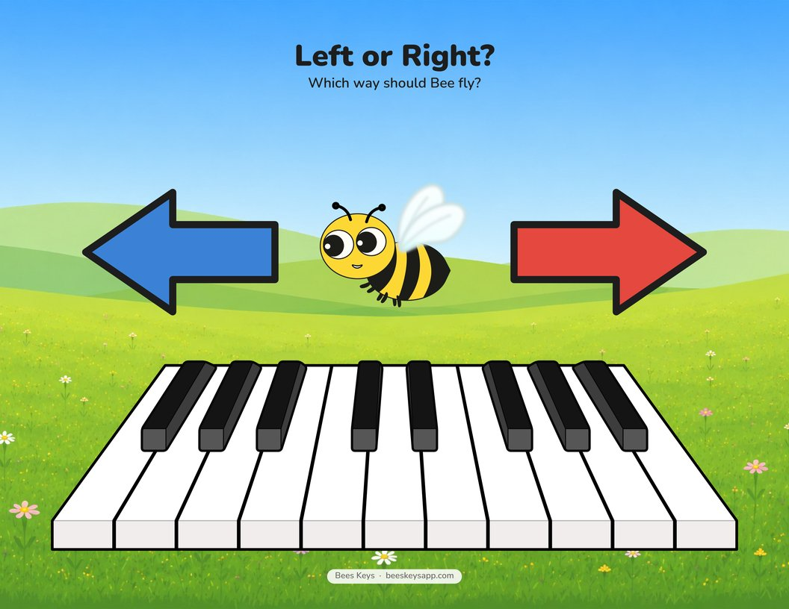
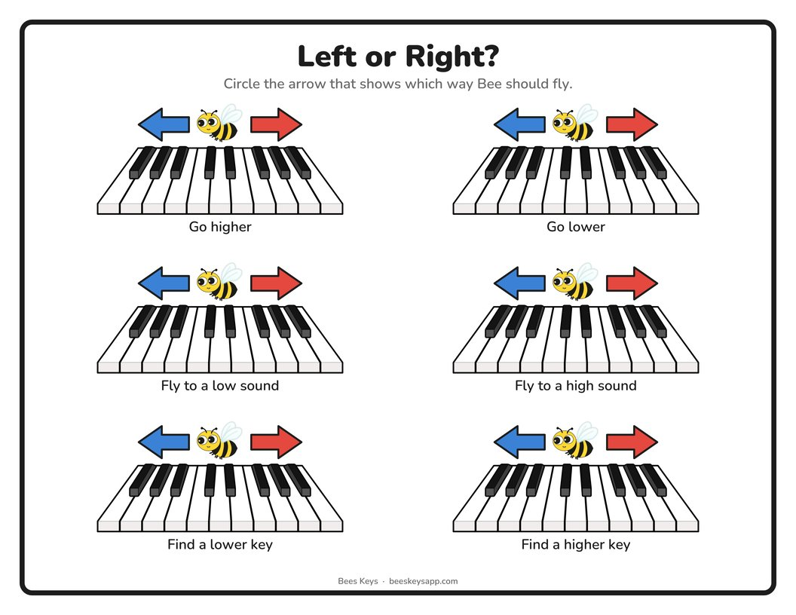
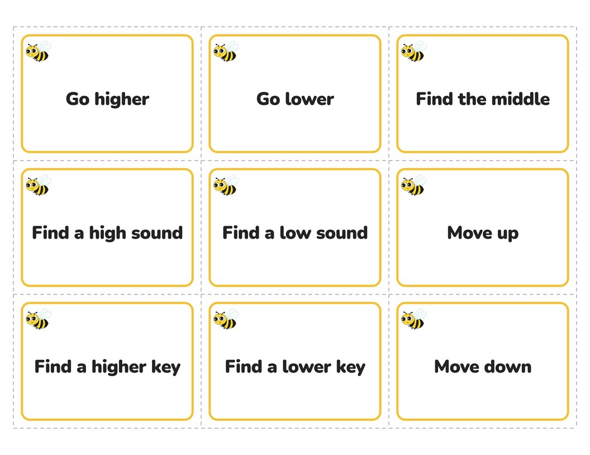
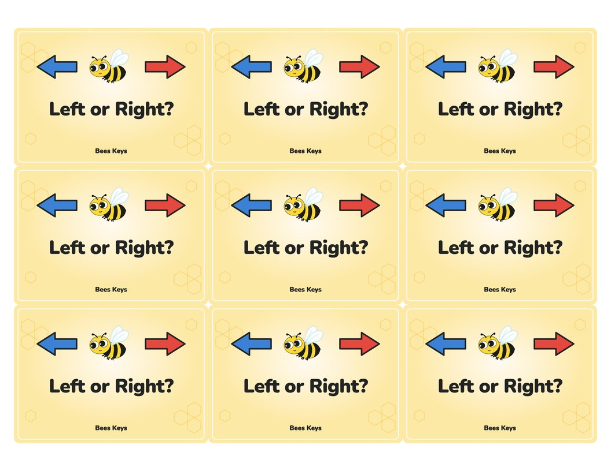

Free printable
Left or Right?
Piano Direction Game and Worksheet
By Kristianna Callahan · Published September 25, 2026

Click to download the free PDFMy young beginner students need constant reminders about which hand is left or right, and which direction on the piano is up/down, high/low, and left/right. So I made these worksheets and game set to practice the vocabulary we often use at the piano and connect those words with directions on the keyboard.
Download the free printable
-

The big board One huge keyboard and two arrows, in white and studio copies. -

The worksheet Six keyboards, six prompts, in white and studio copies. -

9 prompt cards Cut along the dashed lines. -

Card backs Print double-sided. Every back is the same, so either flip lines up.
Here are a few ways I’d use them:
- Basic worksheet: Circle the arrow that shows which direction Bee should fly.
- Prompt cards: Read a card and answer on the large board, at the piano, or both.
- Move a game piece: Place a small bee, eraser, or game piece on the keyboard and move it in the direction shown on the card.
- Start in the middle: Begin in the middle of the keyboard, draw cards one at a time, and see where Bee ends up.
- Call and point: Call out “higher,” “lower,” “left,” or “right” and have the student point to the correct arrow.
- Let the student lead: Have the student draw a card and give the teacher the direction.
- Add sound: After moving, play the starting key and ending key and listen for whether the sound got higher or lower.
- Make it reusable: Laminate the studio pages and use dry erase markers, tokens, or mini figures for repeated practice.
- Use it as a warm-up: Pull a few cards at the beginning of the lesson for a quick keyboard geography review.
Want more free music teaching resources?
I'm making more printables, games, and teaching resources. Send me a note and I'll pass new freebies your way.
Free · unsubscribe any time Send me new freebies
Opens your mail app. Your address is only ever used to send you the free resources.